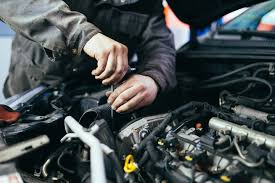
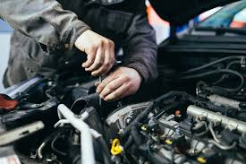

Porto Seguro Salva
Como pode acontecer diversas formas do cliente sair insatisfeito com o serviço do mecânico ou até mesmo desconfiar que foi lesado ou até mesmo ser enganados por alguns que agem de má fé por exemplo, o carro só precisa de uma simples troca na pastilha de freio ai o mecânico mal intencionado que só quer tirar vantagem e não se preocupa se esta te extorquindo ou não, não em pensa conquistar você para sempre te atender e ter indicações referente ao trabalho dele e sua honestidade, ele fala para você que tem que tocar a lona de freio, os discos de freio tudo junto, você mesmo sabendo que não é necessário ou em certas vezes você acha melhor agir de acordo com o que ele está falando, pois seu carro já pode estar desmontado, então você deixa o serviço prosseguir, ou o que seria o correto que era você ter esse diálogo e falar “não essas trocas foram feitas recentemente!” As vezes funciona, mas porque esperar esse momento constrangedor chegar ou até mesmo essa dúvida se ele estava ou não certo em agir daquela forma com você e seu veículo?
Pensando nisso, criamos um programa que resolva o problema que seu veículo apresenta, ele será capaz de direcionar você para o melhor caminho, qual caminho seria esse? Ele indicará quais peças você deve comprar e quanto vai custar, deduzirá o orçamento e a mão de obra e o prazo de entrega até a oficina, com isso o cliente só precisa levar o veículo no dia estipulado para a realização do serviço.
Isso pode ser feito de modo on-line ex.: o cliente fala o problema do veículo, o programa oferece a solução do problema falando qual peça ele irá trocar, feito isso, você pode entrar em contato com seu mecânico de confiança para saber se isso está correto e se ele está disponível para o serviço, uma vez que esteja certo, você coloca o endereço da oficina e realiza a compra do item, com o endereço da oficina já colocado no programa, a oficina recebe o produto, e você com o orçamento estipulado pelo programa você já teria uma certa noção de quanto custaria mais ou menos esse serviço através da mão de obra que o programa julga ser um valor aproximado, assim você até consegue negociar com a oficina/mecânico se esse valor estiver muito abusivo no seu ponto de vista, se estiver tudo certo, o serviço será iniciado.
E no caso de você não conhecer nenhuma oficina/mecânico de confiança o programa disponibiliza várias oficinas para seu conforto, serão cadastradas pela Porto Seguro, o cliente compra a peça, o valor já é calculado, o valor da mão de obra e o tempo previsto para o fim do serviço, assim o cliente efetua o pagamento todo on-line, o cliente será notificado que a peça chegou até a oficina mais próxima de sua casa e ele leva o veículo até lá e espera o prazo de término do serviço.
Com isso o cliente ganha tempo de ir em várias oficinas, fazer orçamento, ficar procurando as peças até comprá-las e chegar até ele e depois ir até a oficina. Esse processo será feito tudo online, fazendo com que o cliente ganhe tempo.
 
